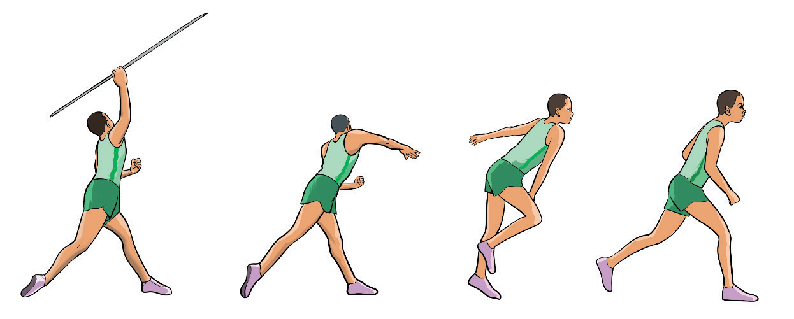

Activity 2.2
Practice American grip, Finnish grip and V-grip repetitively and choose the best gripping type for you.
Throwing
Throwing in javelin refers to the act of propelling the implement through the air to the landing sector. A successful throw requires a combination of speed, technique, and strength. It involves a sequence of coordinated movements, including a controlled approach run, a powerful impulse step, and an explosive throwing motion, followed by a proper follow-through to ensure maximum distance and accuracy. The objective is to throw the javelin as far as possible while adhering to the official rules of the sport. The following are the steps for throwing a javelin;
(i)
Hold the javelin at the grip (corded section) using one of the three techniques: Finish, American, or V-grip;
(ii)
Stand tall with the javelin pointing slightly upward and begin running and increase speed while keeping the javelin steady;
(iii)
Use crossover strides in the final steps to prepare for the throw, with the last two steps being longer;
(iv)
Plant your front foot firmly while keeping your back foot slightly bent, rotating your hips and shoulders forward, and keeping the throwing arm extended back;
(v)
Launch the javelin using a fast arm whip motion, snapping the wrist at the release to create a smooth flight, Figure 2.6; and
(vi)
Continue moving forward after the throw, maintaining balance while remaining in the throwing area until the javelin lands.

a
b
c
d
SPORTS STUDIES FORM TWO.indd 35
9/17/25 9:54 AM